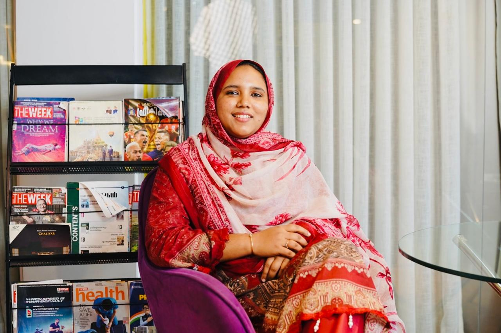

Educational R&D | Learning Innovation | Academic Program Development
Educational R&D professional passionate about improving learning through research, curriculum development, assessment, personalized learning, academic products and learning experience innovation.

Educational R&D Specialist
"Connecting educational research, learner needs, and practical academic solutions."
A journey driven by educational research, curriculum R&D, and learning experience improvement.
I joined Interval in 2022 as a Research Officer in the Academics team. Over time, my professional journey has grown into senior-level responsibilities in Educational R&D and academic learning programs.
Educational research and learning innovation are areas I am deeply passionate about. My work involves identifying learner needs, researching educational trends, developing academic solutions, and improving overall learning experiences.
I work across academic product development, curriculum research, assessment, personalized learning, tutor development, student engagement, and process improvement.
I believe effective education should adapt to learners' needs and aspirations. I enjoy converting research, feedback, and data into practical academic solutions that make a tangible difference.
Identifying core learning gaps, researching educational trends, and evaluating competitor offerings to inform strategic decisions.
Designing outcome-aligned learning products, assessment rubrics, personalized learning models, and academic resources.
Enhancing tutor selection, engagement, and coaching frameworks while establishing structured academic SOPs.
Eight core domains shaping my professional practice in Educational R&D and Academic Innovation.
Synthesizing educational research, literature, student feedback, and learning trends to inform practical academic solutions.
Researching syllabus requirements, learning gaps, and developing outcome-focused academic products, courses, and resources.
Designing diagnostic assessments to evaluate learner-level comprehension and support tailored academic interventions.
Building structured academic learning programs, study guides, and instructional materials tailored to learner needs.
Enhancing tutor selection, engagement, development programs, and session quality to improve the overall learning experience.
Developing initiatives focused on improving student participation, academic activities, motivation, and learning experience.
Identifying operational and academic gaps to design practical workflows, standard operating procedures, and structured solutions.
Evaluating education trends, market opportunities, and competitor offerings to support academic and business decisions.
Practical educational R&D work focused on learner needs, curriculum research, tutor quality, and process improvement.
Addressing diverse learner needs and developing appropriate academic resources and courses.
Researched learner difficulty areas, analyzed feedback, and identified core academic requirements.
Developed and improved academic products, courses, study materials, and practical learning solutions.
Identifying learning gaps and aligning academic content with syllabus guidelines.
Evaluated curriculum standards, subject benchmarks, and direct student difficulty feedback.
Designed updated curriculum research frameworks, syllabus guides, and targeted learning resources.
Understanding individual learner-level comprehension to enable appropriate academic support.
Researched diagnostic assessment structures and learner feedback evaluation methods.
Architected diagnostic assessment models using insights to guide personalized academic interventions.
Navigating tutor challenges, engagement, and maintaining consistent session quality.
Analyzed tutor session feedback, instructional friction points, and pedagogical development needs.
Established tutor coaching guidelines, selection criteria, engagement programs, and quality practices.
Improving student participation, learning engagement, and overall academic experience.
Investigated student feedback, participation trends, and academic activity dynamics.
Introduced engaging academic activities, feedback loops, and learning experience enhancements.
Identifying operational and academic workflow gaps creating friction in delivery.
Audited academic processes, mapped workflows, and identified team operational friction points.
Developed practical processes, Standard Operating Procedures (SOPs), and structured academic solutions.
Ensuring academic offerings stay responsive to market shifts and competitor benchmarks.
Executed competitive analysis, market offering reviews, and learner demand synthesis.
Delivered research insights and market reports to support academic and business decisions.
Enhancing student engagement and academic content quality within online learning environments.
Researched digital engagement practices, online course structures, and learner interaction patterns.
Created digital academic programs, interactive learning content, and remote engagement protocols.
Recognitions and honors awarded for consistency, leadership, and performance excellence.
Awarded Best Performer recognition 7 times among approximately 45 project staff members for consistent high-quality execution.
Earned company-wide Best Performer recognition across 350+ Interval team members for exceptional contribution.
Awarded Collaboration Catalyst recognition across 350+ Interval employees for outstanding cross-functional teamwork.
Honored with the Best Leadership Award for guiding academic initiatives and supporting team development.
Received the Queen of Consistency Award in recognition of sustained dedication and reliable R&D performance.
Classroom initiative recognized as Best Project twice in a single academic year for excellence in learning delivery.
Genuine research themes guiding practical educational solution design and academic improvement.
Identifying foundational student learning difficulties to design targeted academic support materials.
Evaluating syllabus standards to ensure learning materials align cleanly with academic expectations.
Exploring diagnostic assessment methods that deliver insights for tailored learner interventions.
Researching tutor development frameworks to enhance session interaction and pedagogical effectiveness.
Analyzing student participation mechanics and academic activities to elevate student motivation.
Monitoring shifts in learning methodologies, digital tools, and evolving pedagogical practices.
Synthesizing education market data and competitor offerings to inform strategic academic planning.
Translating learning insights into practical, easy-to-use academic products, courses, and study aids.
Enhancing overall learner and tutor satisfaction through continuous feedback loop integration.
Developing clear standard operating procedures (SOPs) to streamline internal academic operations.
A structured, practical workflow for turning educational insights into practical solutions.
"I focus on turning learner needs, feedback, data and educational research into practical academic solutions."
A view of my career progression and responsibilities in Educational R&D.
Open to discussing educational R&D, curriculum research, tutor quality, or academic partnerships.
Whether you are looking to collaborate on educational research, curriculum R&D, tutor development, or academic process improvement, feel free to reach out.